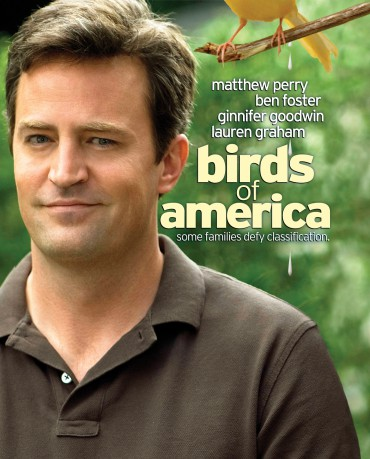

#5671 Das Geheimnis des Glücks
Alternativ: Birds of America
 
 IMDB-Wertung: 6.2 / 10
IMDB-Wertung: 6.2 / 10  Metascore: 0
Metascore: 0 
When Morrie was a teenager, his parents died, leaving him a house, an irritable bowel, and siblings Jay and Ida to raise. Jump ahead 20 years: Jay is homeless, fits poorly into society, and was recently injured; Ida is jobless and sleeps with strangers; Morrie is married to the long-suffering Betty who is waiting for Morrie to get tenure before having children. They constantly have to kiss up to their holier-than-thou neighbors, one of whom is Morrie's department head. Morrie brings Jay home to recover, Ida decides to visit, the siblings make the neighbors ill at ease, a strange woman visits, and the cops want to talk to Jay. What about Morrie's irritated bowels?
Jahr: 2008
Dauer: 84 Minuten
FSK: 12
Land: USA Studio: First Look InternationalTonspuren: DTS - ,
Untertitel: Deutsch,
Auflösung: 1080p (1920x816) Größe: 5365 MB
Genre: Drama, Komödie
Regisseur: Craig Lucas
Drehbuch: Jet Productions
Soundtrack:
Darsteller:
 Matthew Perry als Morrie
Matthew Perry als Morrie Ben Foster als Jay
Ben Foster als Jay Ginnifer Goodwin als Ida
Ginnifer Goodwin als Ida Lauren Graham als Betty Tanager
Lauren Graham als Betty Tanager Zoë Kravitz als Gillian
Zoë Kravitz als Gillian Hilary Swank als Laura
Hilary Swank als Laura- Gary Wilmes als Paul
- Daniel Eric Gold als Gary
- Stacie Theon als Ellen Thomas
- Tom Pelphrey als Hitchhiker
- Donald John Hewitt als Professor in Hallway
- Joanne Lamstein als Protective Mother
- Brandon Hanson als Roger
 Peter Conboy als Man on Street , uncredited
Peter Conboy als Man on Street , uncredited Takako Haywood als Nurse , uncredited
Takako Haywood als Nurse , uncredited- Lindsay Allen als Roller-Blading Girl
- Will Toale als Young Male Cop
- Vivien Kells als Sleeping Girl
- Keith McDermott als Man in Street
- Marisa Zalabak als Woman in Street
- Katrin Redfern als Neighbor on Phone
Datei: X:\2008(G-M)\Geheimnis des Glücks, Das (2008, FSK12, 1920x816).mkv seit 09.03.2017
Festplatte: HD 2008(G-Z)-2009(A-F)
 Es gibt insgesamt 73 Filme in der Gruppe '2008(G-M)'
Es gibt insgesamt 73 Filme in der Gruppe '2008(G-M)'